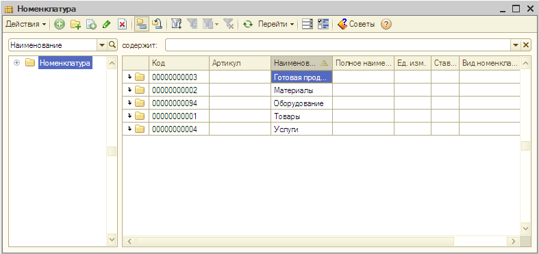
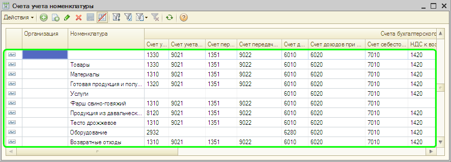

| ПРИМЕЧАНИЕ Номенклатура (применительно к «1С:Бухгалтерии 8 для Казахстана») - это запасы товарно-материальных ценностей (материалы, товары, готовая продукция), оборудование к установке (учитываемое на счете 2932 "Монтаж оборудования"), а также услуги. |
При первоначальном автоматическом заполнении информационной базы в справочнике Номенклатура создаются основные группы номенклатуры: «Готовая продукция», «Материалы», «Товары», «Услуги» и т.д.), в которые удобно добавлять новые элементы (номенклатурные позиции). Новые группы и новые элементы в справочнике Номенклатура создаются так же, как в справочнике Контрагенты (см. раздел «Заполнение сведений о деловых партнерах организации»).

|
ПРИМЕЧАНИЕ На начальном этапе освоения «1С:Бухгалтерии 8 для Казахстана» можно использовать созданные при первоначальном заполнении информационной базы группы номенклатуры и установленные для них счета учета. В дальнейшем можно самостоятельно создавать новые группы, добавлять в них новые номенклатурные позиции, изменять или устанавливать счета учета для каждой единицы и каждой группы номенклатуры. Для каждой организации информационной базы можно установить свой набор счетов учета номенклатуры. |

Только что Вы научились заполнять сведения о товарах и услугах, приобретаемых и реализуемых организацией.
Из следующего раздела Вы узнаете, как отражать хозяйственные операции с помощью документов.